Precision is not about making food complicated. It is about making every detail matter.
KIRILL DROZDOV · CHEF
LONDON · CHEF · CULINARY DEVELOPMENT
CHEF
Premium hospitality, private dining, restaurants and culinary development shaped by experience, precision and a respect for ingredients.
20+ YEARS
PROFESSIONAL KITCHENS
ABOUT ME
Food is my language.
I am Kirill Drozdov, a London-based chef with more than two decades of professional kitchen experience.
My experience covers fine dining, premium hospitality, private dining, restaurant kitchens and culinary development.
Explore experience
SELECTED WORK
Signature dishes
A selection of dishes reflecting technique, seasonality and modern presentation.

Salmon Carpaccio
01 / Signature

Seasonal Mezze
02 / Selection
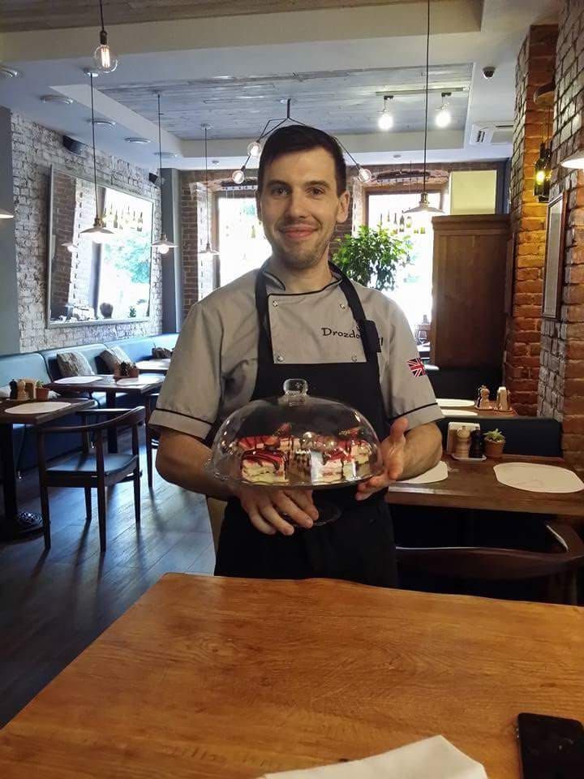
Petit Fours
03 / Patisserie

Seasonal Roast Vegetables
04 / Seasonal
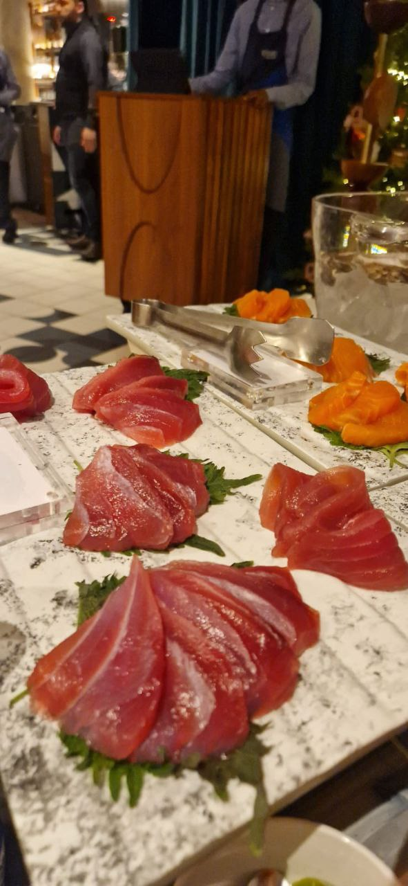
Sashimi
05 / Precision
EXPERIENCE
Professional journey
SELECTED EXPERIENCE
Available for opportunities
-
Junior Sous Chef KYN Hurlingham · London
-
Chef de Partie Mirabelle · Marco Pierre White · Mayfair, London
-
Senior Kitchen Experience Fine dining, premium hospitality and restaurant kitchens
-
Professional Culinary Experience Restaurants, private dining, events and culinary development
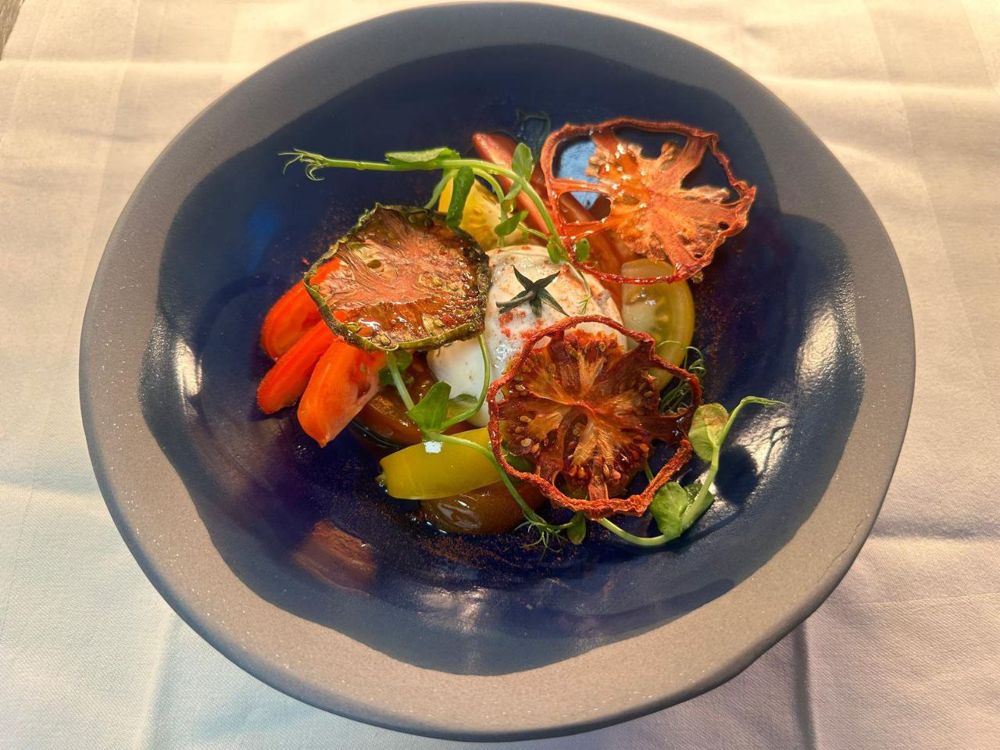
“
From the kitchen to the wider operation, I understand food as both craft and business.
A chef should understand the complete journey: ingredients, people, service, standards and the guest.
GALLERY
Kitchen & table
Behind the scenes, finished plates and the atmosphere surrounding contemporary hospitality.
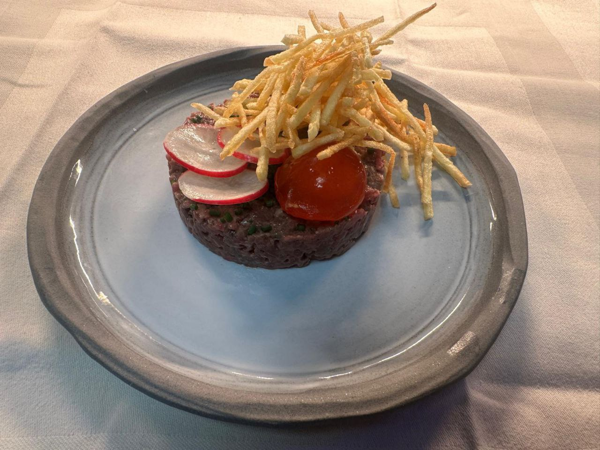
Tasting Menu
01
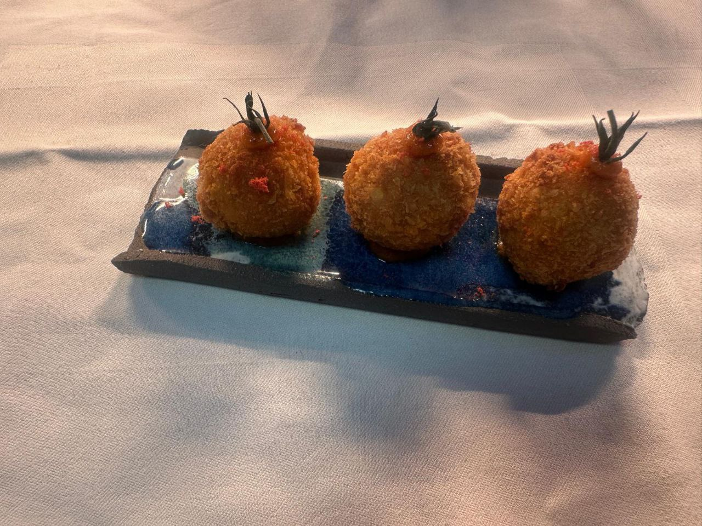
Amuse Bouche
02
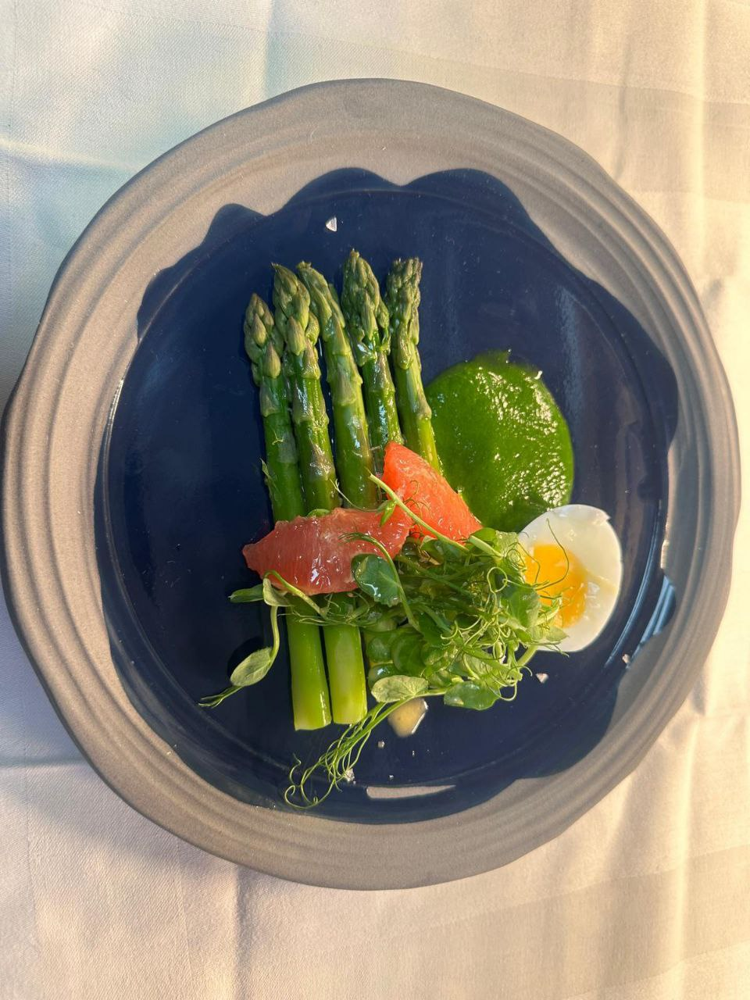
Dessert Display
03
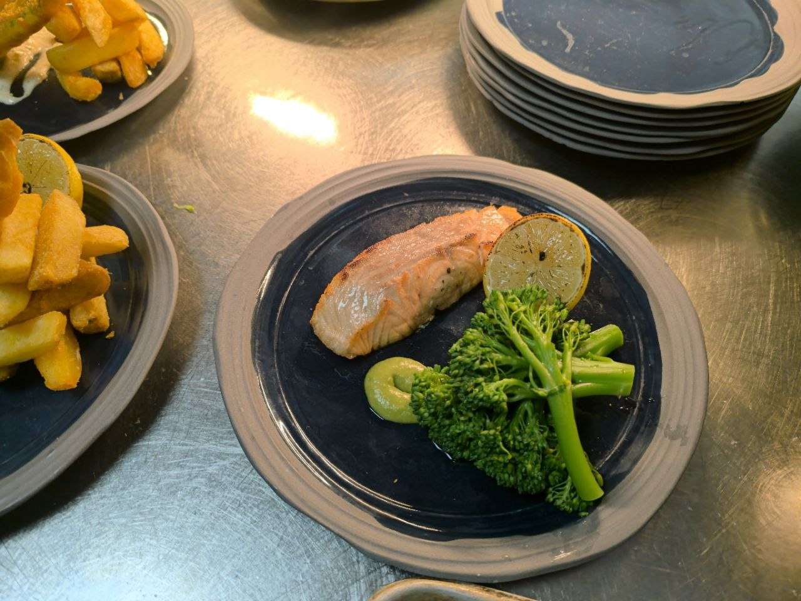
Pastry Buffet
04
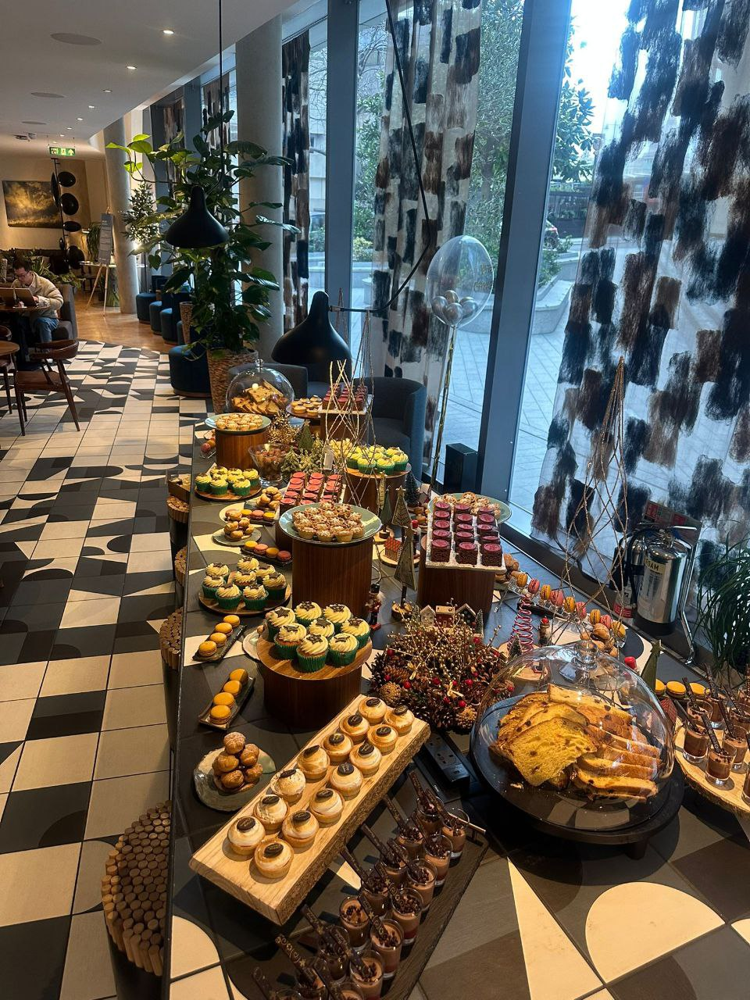
Asparagus & Egg
05
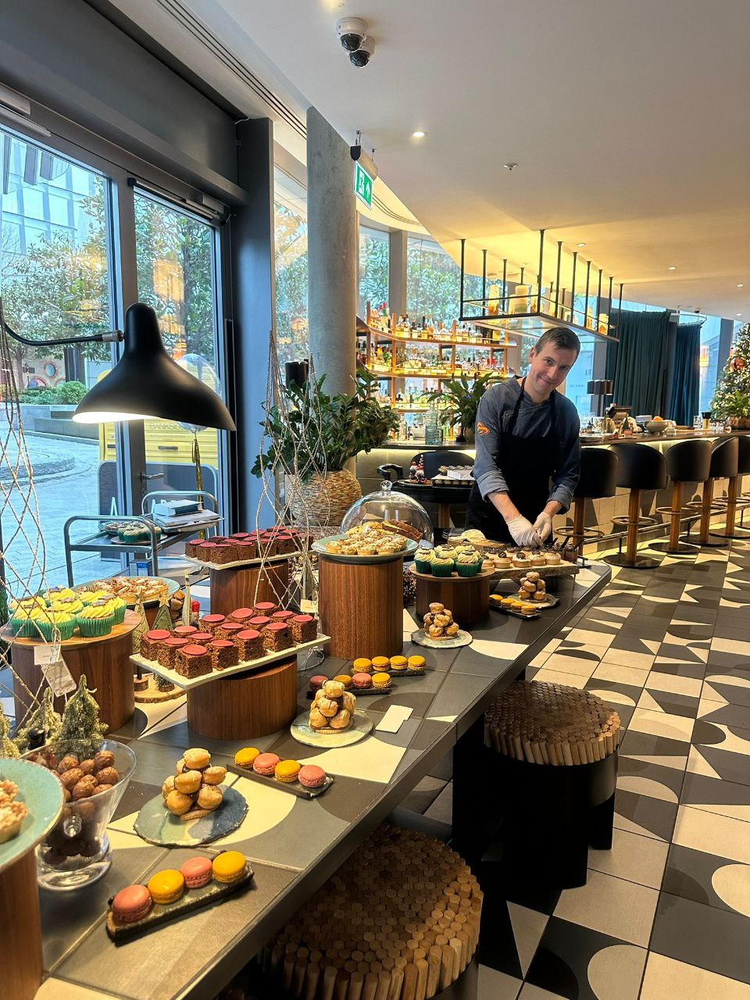
Salmon & Brassicas
06

Herb Fish
07
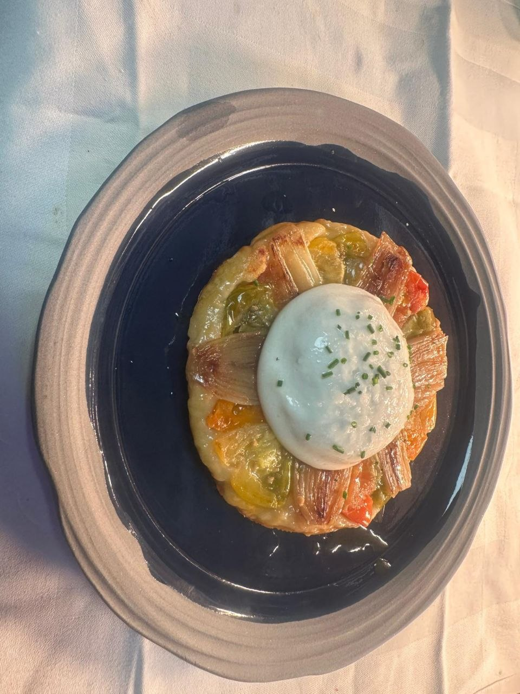
Leek Tatin
08
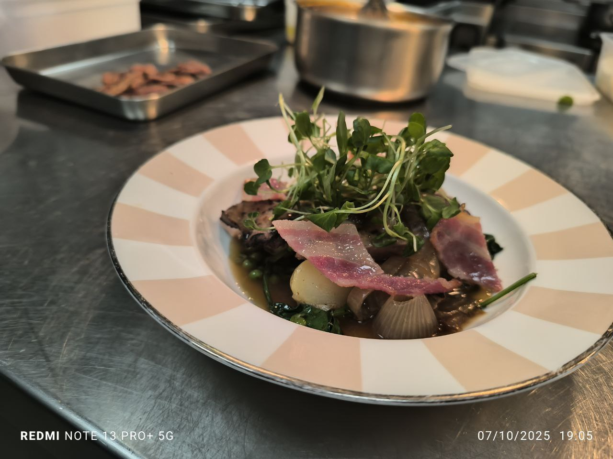
Duck
09
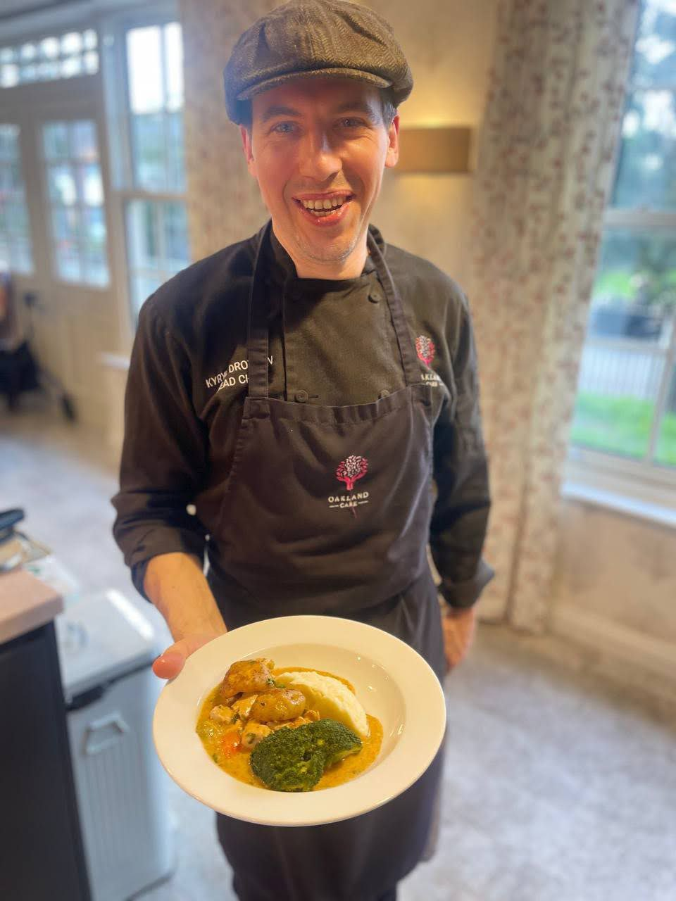
Pasta
10

Crème Brûlée
11
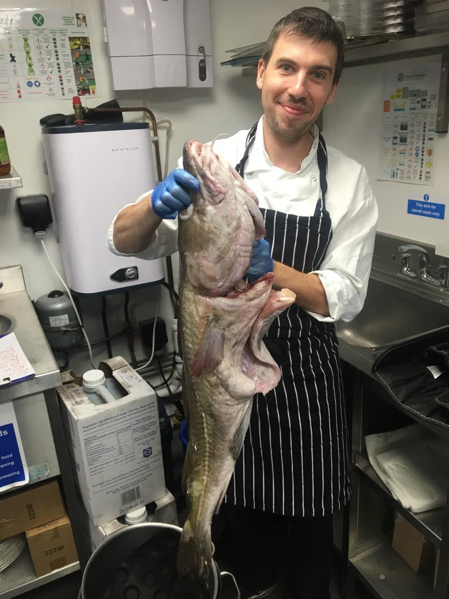
Seasonal Roast
12
CONTACT
Let's create something memorable.
Open to chef opportunities, private dining, culinary projects and selected collaborations.
- LOCATION
- London, UK
- ROLE
- Chef · Culinary Development
- AVAILABILITY
- Selected opportunities
KD